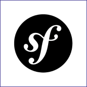
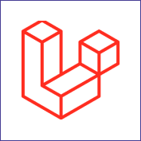

Actuellement en troisième année à l'IIM, où je me spécialise en Coding & Digital Innovation, j'ai découvert ma véritable passion pour le monde du numérique et de l'innovation, et j'ai travaillé dur pour développer mes compétences dans ce domaine.
Mais mon parcours ne s'arrête pas là. Je suis également très investie dans l'association LDV Esport, où j'occupe actuellement le poste de Responsable Esport, qui consiste à veiller à la bonne entente entre les différentes équipes et les différents staffs, mais également de gérer les tournois.
Récemment, j'ai eu la chance de rejoindre Zephyr Esport en tant que support pour l'équipe féminine de League of Legends. C'est une expérience palpitante et exaltante, car je peux combiner ma passion pour les jeux vidéo compétitifs avec des compétences que j'ai développées au cours de mes études. Participer à des compétitions et représenter Zephyr Esport est un honneur, et je suis déterminée à donner le meilleur de moi-même pour notre équipe.
Mon ancien portfolio était une vitrine de mes compétences et de mon parcours professionnel, mettant en avant mes réalisations passées, mon style, ma créativité et ma vision dans le domaine du développement web et du design. Bien qu'il soit désormais remplacé par un nouveau portfolio reflétant davantage mon style actuel, mon ancien portfolio reste un témoignage précieux de mon parcours et de ma passion pour le développement web et le design.
Ecologica est un site web conçu dans le but de promouvoir une école dédiée à l'écologie. Ce site informatif présente de manière claire et engageante les programmes éducatifs axés sur la durabilité, les activités environnementales et les valeurs éthiques de l'école. Il offre aux visiteurs un aperçu complet de l'établissement et des opportunités d'apprentissage, le tout dans un format convivial et accessible.
Le site Wiki de film offre aux amateurs de cinéma une base de données complète et organisée, regroupant des informations détaillées sur une multitude de films, acteurs, réalisateurs, et bien plus encore. Mon objectif était de créer un espace convivial où les cinéphiles peuvent explorer le monde du cinéma, partager des connaissances, et contribuer à une communauté collaborative. Ce projet reflète ma passion pour le cinéma et mon désir de le rendre accessible à tous.
Le site sur la Ménagerie de Paris que j'ai réalisé est une invitation à explorer ce lieu emblématique. Il offre aux visiteurs une expérience virtuelle immersive, mettant en avant la diversité des espèces animales hébergées dans ce parc historique.Ce site vise à sensibiliser le public à la conservation de la biodiversité tout en mettant en valeur le charme unique de la Ménagerie de Paris. C'est un hommage à ce lieu exceptionnel et à sa mission de préservation de la faune mondiale.
J'ai développé des compétences solides en front-end, notamment en CSS et en SASS. De plus, j'ai exploré les Frameworks comme Tailwind CSS et Vue.js pour créer des interfaces utilisateur modernes et efficaces.
J'ai acquis des compétences solides en back-end grâce à PHP et MySQL, tout en utilisant les Frameworks Symfony et Laravel pour simplifier le développement de projets web complexes.
 J'ai acquis des compétences en conception avec Figma et Photoshop pour la modification d'images et la création de maquettes. De plus, j'ai une expertise dans l'utilisation de CMS tels que WordPress et Webflow pour la gestion de contenu de sites web.
Ma vie est animée par quatre grandes passions : les jeux vidéo compétitifs, l'esport sur League of Legends et Valorant, la culture japonaise ainsi que la musique rock et pop. L'un de mes moments les plus mémorables fut ma participation à la Gamers Assembly, une LAN où j'ai eu le privilège de caster avec mon meilleur ami. Cette expérience a été enrichissante, nous permettant de partager notre passion pour les jeux compétitifs avec un public enthousiaste, tout en vivant l'excitation de l'événement en personne.
En parallèle, ma passion pour la musique rock et pop est une source d'inspiration constante de par les mélodies entrainantes et les paroles qui me touchent personnellement.
Je me suis également plongé dans l'univers fascinant des manga et de l'animation japonaise.C'est un monde où l'imagination n'a pas de limites, où des histoires captivantes se mêlent à une esthétique visuelle unique. Les personnages emblématiques et les intrigues profondes ont le pouvoir de me transporter dans des mondes fantastiques.